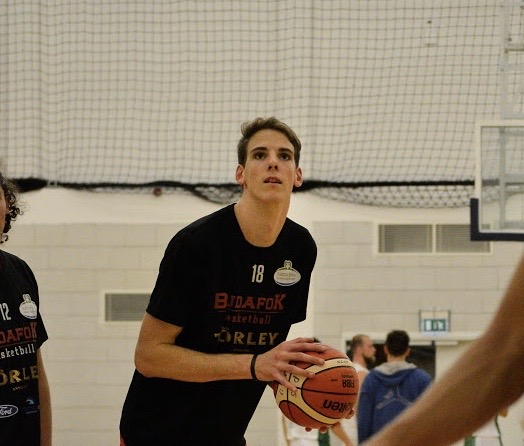
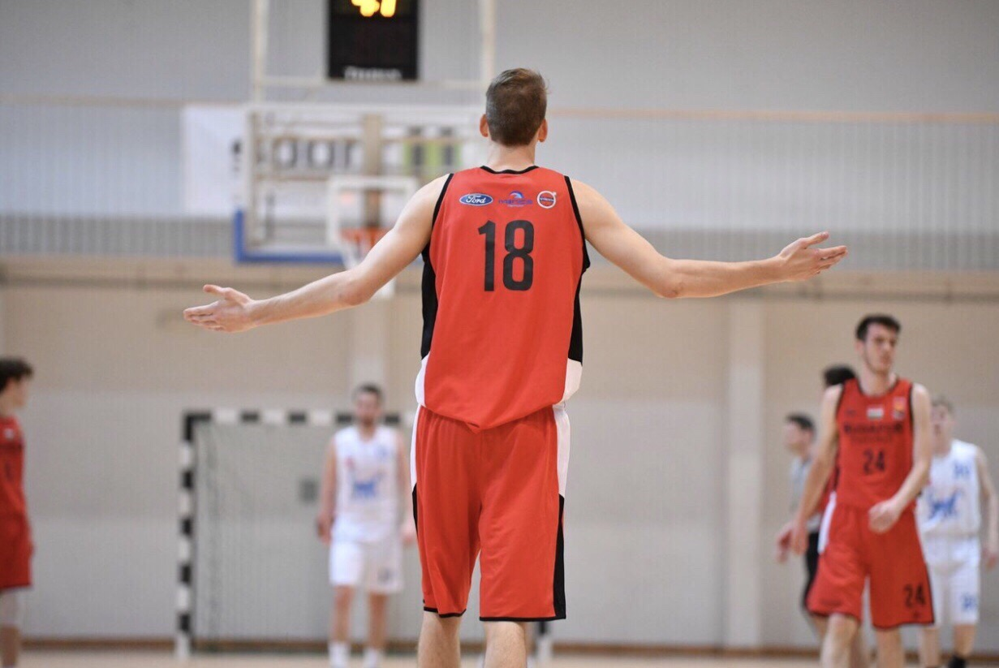

A családomban mindig nagy hangsúly volt a mozgáson, így már gyermekkorom óta rendszeresen sportolok. Az első sportágam az úszás volt, ám hamar váltottam a kosárlabdára. Jelenleg már több mint 10 éve pattogtatom a labdát, azonban emelett számos másik sportágban kipróbáltam magam. Kosárlabdát tekintve több egyesületnél is jártam,illetve néhány említésre méltó eredményt sikerült elérnem a csapattársaimmal.A sportágat a Mafcnál kezdtem, innen a Budai XI-be igazoltam onnan pedig Újpestre. 2017-ben kerültem a Budafoki Kosárlabda Klubhoz, s jelenleg is itt játszom. A kosárlabda mellett a másik nagy kedvenc labdajátékom a röpi.Nyaranta szinte végig strandon játszom, illetve nehány kartársammal résztvettünk a Kármán Kollégiumban rendezett röplabda bajnoskágon ahol az előkelő első helyet sikerült megszereznünk.
 